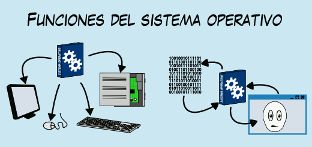

Núcleo Digital
Núcleo Digital
Definicion
Un sistema operativo (SO) es el software principal que gestiona los recursos de hardware y software de un dispositivo. Sirve como intermediario entre el usuario y el hardware, permitiendo ejecutar programas de manera eficiente y segura .
principales funciones
Gestión de procesos: °Controla la ejecución de programas, permitiendo que múltiples tareas se ejecuten al mismo tiempo (multitarea). °Administra el uso del procesador y prioriza procesos según su importancia o urgencia. Gestión de memoria: °Asigna y supervisa el uso de la memoria principal (RAM) por los programas. °Libera memoria cuando los procesos terminan, evitando conflictos y maximizando el rendimiento. Gestión de dispositivos: °Controla y coordina el uso de dispositivos periféricos, como impresoras, discos duros, teclados y monitores. °Proporciona controladores (drivers) que facilitan la comunicación entre el hardware y el software. Gestión de archivos: °Proporciona un sistema de almacenamiento y recuperación de datos mediante estructuras organizadas, como carpetas y directorios. °Gestiona permisos de acceso para proteger los datos. Interfaz de usuario: °Permite a los usuarios interactuar con el sistema mediante: °Interfaces de línea de comandos (CLI), como MS-DOS o la terminal de Linux. °Interfaces gráficas de usuario (GUI), como las de Windows, macOS o Android.
Definicion

Existen varios tipos de sistemas operativos 1. Sistemas Operativos de Escritorio Diseñados para computadoras personales y laptops, estos sistemas ofrecen interfaces gráficas amigables y están optimizados para tareas individuales. Ejemplos: Windows, macOS, Linux (distribuciones como Ubuntu o Fedora). Características: Soporte para multitarea. Interfaces gráficas (GUI). Amplia compatibilidad con hardware y software. 2. Sistemas Operativos Móviles Optimizados para dispositivos móviles como teléfonos inteligentes y tabletas. Se centran en la usabilidad táctil y la gestión eficiente de energía. Ejemplos: Android, iOS. Características: Interfaces diseñadas para pantallas táctiles. Tiendas de aplicaciones para descargar software. Soporte para comunicación (llamadas, SMS) y conectividad (Wi-Fi, Bluetooth). 3. Sistemas Operativos de Red Gestionan recursos y servicios en redes de computadoras, permitiendo la comunicación y el intercambio de datos entre dispositivos. Ejemplos: Unix, Linux Server, Windows Server. Características: Soporte para múltiples usuarios y dispositivos. Alta seguridad y control de acceso. Servicios como administración de archivos compartidos, correo electrónico y bases de datos. 4. Sistemas Operativos de Tiempo Real (RTOS) Diseñados para realizar tareas dentro de un límite de tiempo estricto, son fundamentales en aplicaciones donde el tiempo es crítico. Ejemplos: FreeRTOS, VxWorks. Usos comunes: Controladores industriales, equipos médicos, sistemas de navegación. Características: Respuesta garantizada en tiempo real. Alta confiabilidad y previsibilidad. Uso en sistemas embebidos. 5. Sistemas Operativos Empotrados (Embebidos) Implementados en dispositivos que realizan funciones específicas. Generalmente tienen recursos limitados y no requieren interfaces complejas. Ejemplos: Android Things, sistemas embebidos en electrodomésticos o automóviles. Características: Tareas específicas. Integración directa con el hardware. Bajo consumo de recursos.
Linux
Linux comenzó en 1991 como un proyecto personal de Linus Torvalds, un estudiante finlandés de la Universidad de Helsinki, quien buscaba crear un núcleo de sistema operativo basado en UNIX que fuera libre y accesible para todos. Inspirado por Minix, un sistema operativo educativo, Torvalds desarrolló un kernel que posteriormente se convirtió en el corazón de un ecosistema completo de software de código abierto. Una de las características más importantes de Linux es su naturaleza de código abierto, lo que permite a cualquier persona estudiar, modificar y distribuir su código. Esto ha resultado en una enorme variedad de distribuciones adaptadas a diferentes necesidades, desde servidores hasta sistemas de escritorio. Además, Linux es gratuito, lo que lo hace accesible para individuos, empresas y gobiernos de todo el mundo Linux es conocido por su estabilidad y seguridad, características que lo hacen ideal para entornos críticos como servidores y supercomputadoras. También es altamente eficiente y flexible, capaz de ejecutarse en una amplia gama de hardware, desde dispositivos móviles hasta grandes centros de datos. A pesar de su inicio modesto, Linux es ahora uno de los sistemas operativos más influyentes del mundo.
Microsoft DOS

Microsoft DOS (MS-DOS) surgió en 1981, cuando Microsoft adquirió un sistema operativo llamado QDOS (Quick and Dirty Operating System) para adaptarlo y desarrollarlo como el sistema operativo principal para las computadoras IBM. MS-DOS fue diseñado para ser un sistema operativo de línea de comandos que permitiera a los usuarios interactuar directamente con el hardware de sus computadoras. Una de las características más distintivas de MS-DOS es su simplicidad, siendo un sistema operativo liviano que no requería grandes recursos de hardware. Su arquitectura basada en comandos ofrecía flexibilidad y control, pero exigía un conocimiento básico de sus instrucciones para ejecutar tareas. Aunque MS-DOS carecía de interfaz gráfica, su diseño permitió la creación de aplicaciones potentes para la época. Además, sentó las bases para los sistemas operativos Windows, que evolucionaron a partir de este entorno. MS-DOS dejó de ser un sistema operativo independiente con la llegada de Windows 95, aunque su núcleo permaneció como base para versiones posteriores.
Apple iOS
iOS, el sistema operativo de Apple para dispositivos móviles, fue lanzado en 2007 junto con el primer iPhone. Su creación marcó un hito en la tecnología móvil al introducir una interfaz completamente táctil y un enfoque en la simplicidad y experiencia de usuario. Entre sus características más destacadas se encuentra su integración con el ecosistema Apple, permitiendo sincronización fluida con dispositivos como Mac, iPad y Apple Watch. iOS también se distingue por su seguridad, utilizando un sistema de sandboxing para aislar aplicaciones y proteger los datos del usuario. El App Store, introducido en 2008, revolucionó la forma en que los usuarios accedían a software móvil, estableciendo un estándar para la distribución de aplicaciones. Además, iOS es conocido por su eficiencia energética, aprovechando al máximo el hardware de los dispositivos Apple y ofreciendo actualizaciones regulares para mantenerlos al día.
Windows
Windows debutó en 1985 como una interfaz gráfica para MS-DOS, diseñada para facilitar el uso de computadoras personales mediante el uso de ventanas, íconos y menús. Con el tiempo, evolucionó hasta convertirse en un sistema operativo completo y líder en el mercado global. Una de las características más importantes de Windows es su compatibilidad con una amplia gama de hardware y software, lo que lo hace accesible para diversos usuarios y empresas. A lo largo de los años, Windows ha introducido innovaciones como el menú de inicio, la interfaz multitarea y la integración en la nube con Microsoft OneDrive. Windows es conocido por su facilidad de uso, especialmente en entornos empresariales, donde su compatibilidad con software de productividad como Microsoft Office lo ha convertido en un estándar. Además, la plataforma continúa evolucionando con versiones recientes como Windows 10 y 11, que incluyen nuevas características de seguridad, soporte para hardware moderno y una interfaz más intuitiva.